Visual Marketing · Artum
Artum is een webwinkel vol aquarelverf, penselen, napjes en blokken, voor iedereen in Nederland en België die graag schildert. Op beurzen geven ze workshops, en daar sta ik met de camera. Op Creaweekend Hardenberg schilderden bezoekers hun eigen betoverende polaroid in aquarel. Ik fotografeerde de stand, de producten en vooral de mensen aan tafel: de eerste penseelstreek, het meekijken, het trotse resultaat.
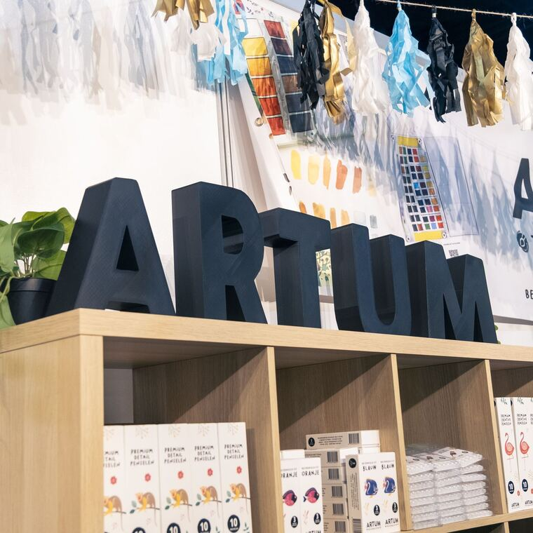
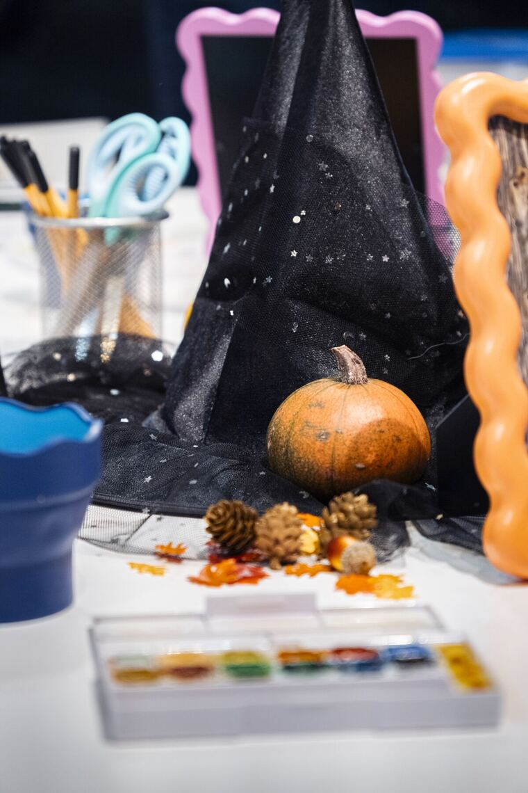
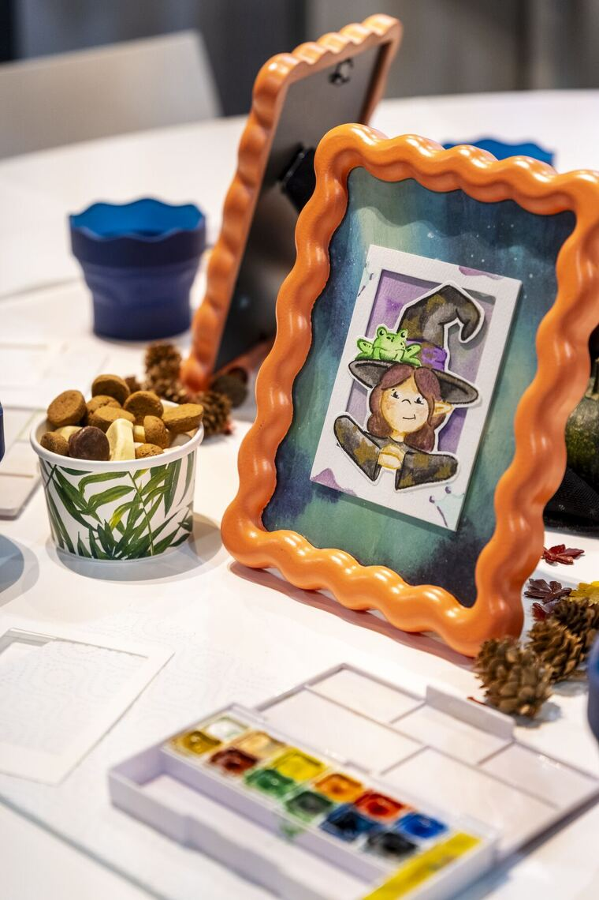
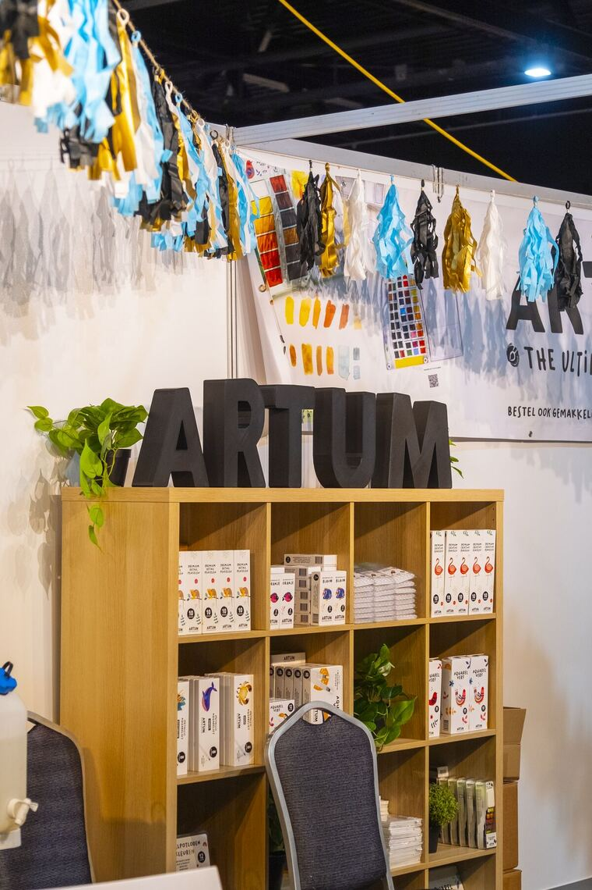
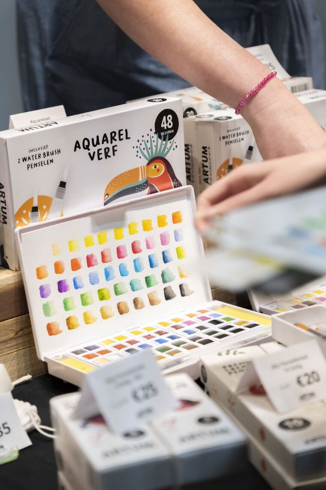
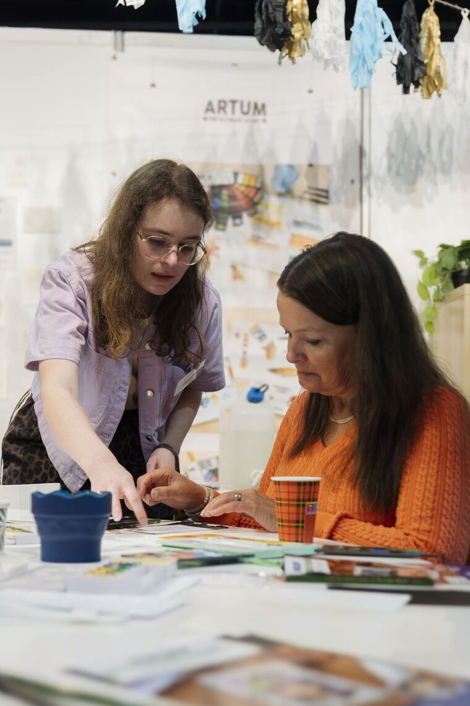
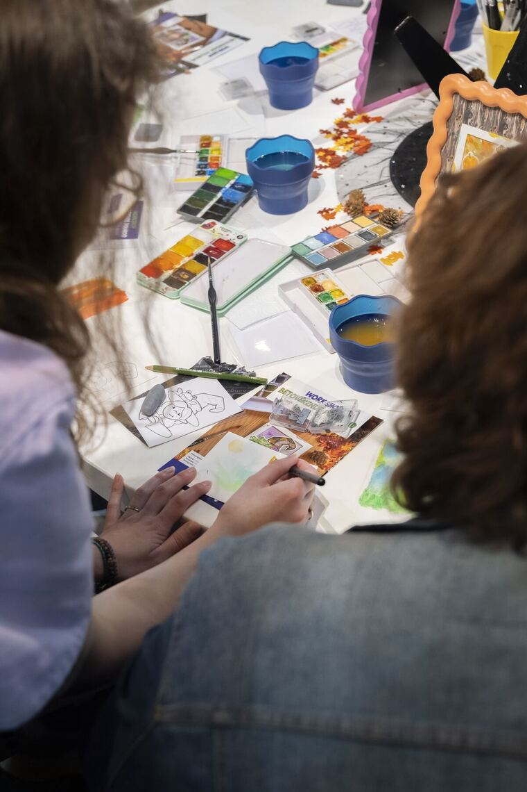
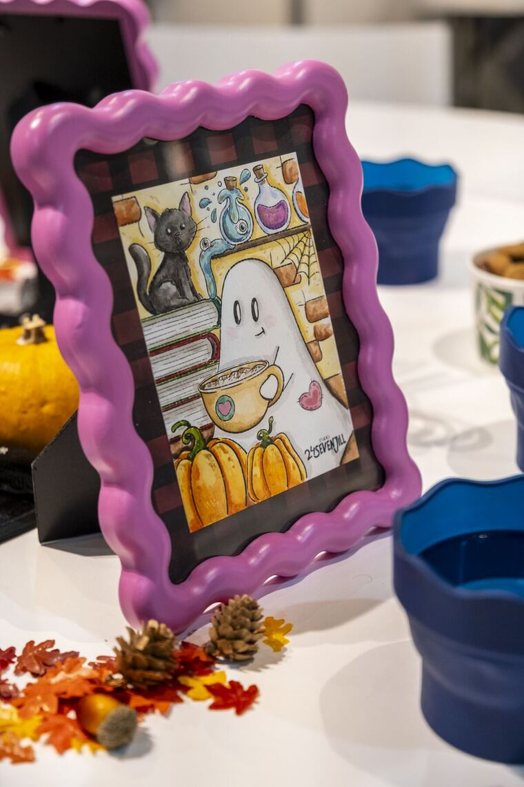
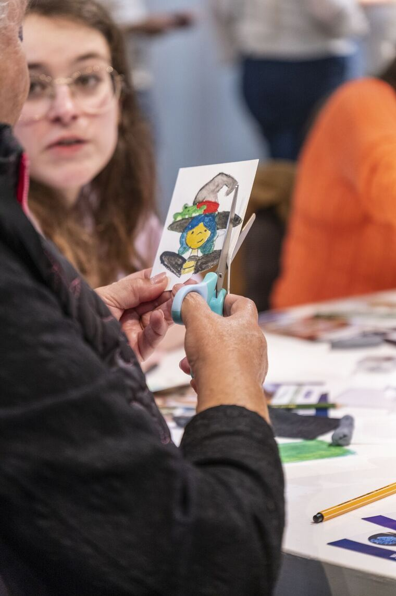
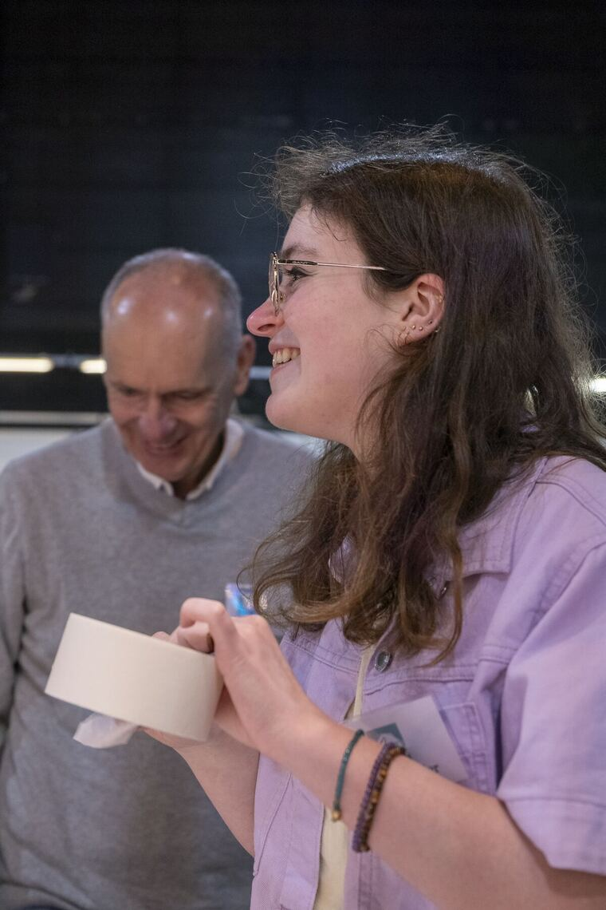
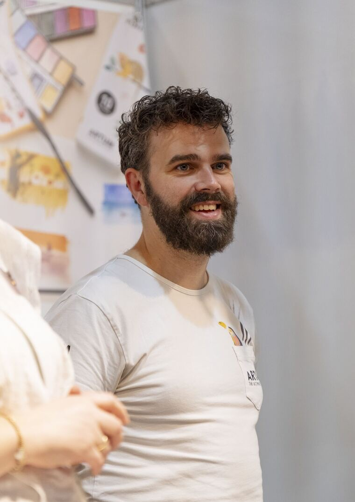
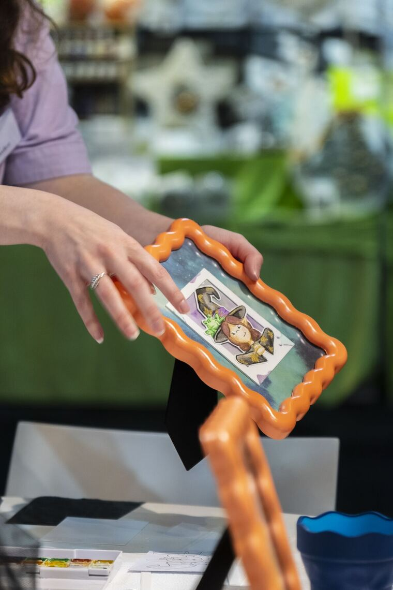
Sleep de lijn of klik een foto open